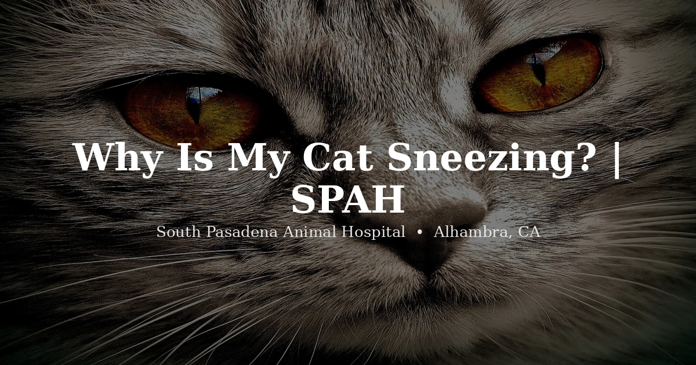

October 14, 2026 · 6 min read
Why Is My Cat Sneezing?

A single sneeze from a cat is one of the more charming things in the world, and almost never worth a second thought. Cats sneeze at dust, at a tickle, at the burst of a cleaning spray. Same as we do. The question we actually care about at our Alhambra clinic is a different one: is this an occasional sneeze, or is your cat having fits of them, day after day, maybe with a goopy nose to match? That second pattern is the one that usually has a reason worth finding.
So let's sort the harmless from the meaningful.
The most common cause: an upper respiratory infection
If a cat is sneezing repeatedly, our minds go first to an upper respiratory infection. Essentially a cat cold, and usually viral. Feline herpesvirus and calicivirus are the usual suspects, and they're extremely common, especially in cats that came from a shelter or a crowded early environment. The frustrating thing about the herpesvirus in particular is that it tends to settle in for life and flare up when a cat is stressed, so some cats get recurring bouts over the years. Alongside the sneezing you'll often see watery eyes, nasal discharge, and a cat that's a little quieter than usual.
Irritants in the air
Cats have sensitive noses, and plenty of everyday things set them off: dust from a fresh bag of litter, scented candles, perfume, cigarette smoke, cleaning products, even a dusty shelf they just investigated. If the sneezing lines up with something new in the environment and the cat is otherwise bright, eating, and clear-eyed, an irritant is often the whole story. Switching to a low-dust litter and keeping sprays away from their space can settle it down.
Something stuck in the nose
Here's a pattern we want owners to recognize: sudden, violent, repeated sneezing that comes out of nowhere, often with the cat pawing at its face. That can mean something is physically lodged in the nasal passage. A blade of grass is the classic culprit in indoor-outdoor cats. This one tends to be dramatic and one-sided, and it's worth a prompt vet visit rather than waiting it out.
The cause people miss: the teeth
This is the one that surprises owners most. The roots of a cat's upper teeth sit right up against the nasal passages and sinuses. When a tooth root gets infected or dental disease sets in, it can quietly drive sneezing and a one-sided nasal discharge that no one connects to the mouth. We see it more than you'd think, and it's exactly why a sneeze that won't quit deserves a real exam rather than a guess.
Less common, still worth knowing
In older cats especially, persistent one-sided sneezing and nasal discharge occasionally points to nasal polyps or a growth, and chronic inflammation of the nasal lining can linger after old infections. These are less common, but they're part of why "sneezing that just won't stop" earns a closer look rather than another week of watching.
When to bring your cat in
Reach out to a vet if your cat:
- Is sneezing frequently or in repeated fits, not just now and then
- Has thick, yellow, green, or bloody discharge from the nose
- Has runny, crusty, or squinting eyes along with the sneezing
- Has discharge or sneezing clearly on one side only
- Is eating less, hiding, breathing harder, or just seems off
We see cats at our cat vet in Alhambra, and a sneeze that's turned into a pattern is a good reason to call us. Our guide to the signs a cat is sick covers the quieter clues cats give, and our pricing page lays out what an exam involves.
Frequently Asked Questions
Is it normal for cats to sneeze?
An occasional sneeze is completely normal. Cats react to dust, a tickle, or a strong smell just like we do. Frequent sneezing, sneezing fits, or sneezing with nasal or eye discharge, reduced appetite, or low energy is what usually has a medical cause.
Why does my cat keep having sneezing fits?
Repeated fits are most often an upper respiratory infection. A usually-viral cat cold. Other causes include inhaled irritants, dental disease near the nasal passages, and, with sudden violent one-sided sneezing, something lodged in the nose like a blade of grass. A vet can sort out which.
When should I take my sneezing cat to the vet?
See a vet for frequent sneezing or fits, thick yellow/green/bloody nasal discharge, runny or crusty eyes, harder breathing, or a cat that's stopped eating or slowed down. One-sided discharge or a cat that seems truly unwell should be seen promptly.
Can a cat's sneezing be from its teeth?
Yes. The roots of a cat's upper teeth sit very close to the nasal passages, so dental disease or an infected tooth root can cause sneezing and nasal discharge, often on one side. It's easy to miss, which is why a thorough exam matters when sneezing doesn't resolve.